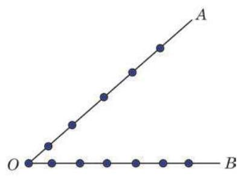

1 组合的定义
考虑下面的问题: 从甲、乙、丙 3 名学生中选出 2 名, 有多少种不同的选法?
这个问题与本章 6.2 节的问题 1 不同. 6.2 节的问题 1 是从 3 个互不相同的元素中任取 2 个, 并按序排列, 求一共有多少种不同的排列方法, 这是排列问题; 而本节所考虑的问题是, 从 3 个互不相同的元素中任取 2 个, 不管怎样的顺序都看作同一组, 求一共有多少个不同的组. 这就是所要研究的组合问题.
上面的问题中要确定有几种不同的选法, 就是要求从 3 个互不相同的元素中取出 2 个不同元素的所有组合的个数. 如果两个组合中的元素完全相同，不管元素的顺序如何，这两个组合都是相同的组合; 而只有当两个组合中的元素不完全相同时, 这两个组合才是不同的组合. 上面问题的所有组合有 3 个, 分别是:
甲乙、乙丙、丙甲.
注意:组合"甲乙"与组合"乙甲"是相同的组合，而组合"甲乙"与组合"乙丙"是不同的组合.
从排列和组合的定义可以看到, 排列与元素的顺序有关, 组合与元素的顺序无关. 例如, "甲乙"与 "乙甲" 是不同的排列, 但它们是同一个组合.
例题 1
例 1 判断下列问题分别是排列问题还是组合问题:
(1)从 10 名学生中任选 5 名去参观一个展览会，求有多少种不同的选法;
(2)从1、2、3、4、5这5个数字中，每次任取 2 个不同的数作为一个点的坐标, 求所有不同点的个数;
注意排列与组合的区别.
(3)一个黄袋中装有四张分别写有 1、3、5、7 的卡片，另一个红袋中装有四张分别写有 2、8、16、32 的卡片. 从红袋和黄袋中各任取一张卡片，问这两张卡片上的数相加所得的和有多少种;
(4)有四本不同的书要分别送给四个人，每人一本，问一共有多少种不同的送法. ?
请同学们思考本例中各题的判断依据.
例题 2
例 2 甲、乙、丙、丁 4 支篮球队举行单循环赛(即任意两支球队都要比赛一场).
(1)写出每场比赛的两支球队；
(2)写出冠亚军的所有可能情况.
练习 6.3(1)
练习6.3(1) · 1
- ( 1 )写出从 五个元素中任取两个不同元素的所有组合；
(2)写出从 五个元素中任取两个不同元素的所有排列.
练习6.3(1) · 2
- 平面上的 6 个点 中的任意 3 个点都不在同一条直线上,写出所有以其中 3 个点为顶点的三角形.
2 组合数的计算
类似于排列数, 我们给出组合数的定义:
C 是英文 combination 的第一个字母. 在数学文献中, 也常记作 .
因此，从甲、乙、丙 3 名学生中任选 2 名，有 种不同的方法.
下面我们研究组合数 的计算方法,这可以从组合数 与排列数 的关系入手.
例如,从 3 个不同元素 中取出 2 个不同元素的排列与组合的关系如表 6-1 所示:
表 6-1
从表 6-1 可以看到, 对于每一个组合都有 2 种不同的排列. 因此，求从 3 个互不相同的元素中任取 2 个不同元素的排列数 ,可以分成以下两步进行:
第一步, 从 3 个互不相同的元素中任取 2 个不同元素, 共有 个不同的组合;
第二步,将每一个组合中的 2 个元素进行全排列,各有 个排列.
根据乘法原理, 有
即
一般地,从 个互不相同的元素中任取 个不同元素进行排列, 可以分成以下两步进行:
第一步,从 个互不相同的元素中任取 个不同元素,共有 个不同的组合;
第二步,将每一个组合中的 个元素进行全排列,各有 个排列.
这样,根据乘法原理,从 个互不相同的元素中任取 个不同元素的排列数 满足
因此
例题 3
例 3 圆上有 10 个不同的点, 以其中任意 3 个点为顶点, 可以组成多少个不同的三角形?
例题 4
例 4 某校高中一年级举行篮球赛. 比赛时先分成两组, 其中 1 班、 2 班、 3 班、 4 班为第一组，5 班、 6 班、 7 班、 8 班、 9 班、 10 班为第二组. 各组先进行单循环赛(即同组中的每两支队都要比赛一场), 然后由各组的前两名共 4 支队进行单循环赛决出冠军和亚军. 问: 一共需要比赛多少场?
例题 5
例 5 有甲、乙、丙三项任务，其中甲需 2 人承担，乙、 丙各需 1 人承担. 现从 10 人中任选 4 人承担这三项任务，不同的选法有多少种?
例题 6
例 6 某班要选举班干部，现有 10 名候选人.
(1)从这 10 名候选人中任选 5 人组成班委，有多少种不同的选法?
(2)从这 10 名候选人中任选 5 人分别担任班委中五项不同的职务, 每项职务由一人担任, 每人只担任一项职务, 有多少种不同的选法?
练习 6.3(2)
练习6.3(2) · 1
- 某班有 20 名男生、18 名女生, 现从中任选 5 人组成一个宣传小组, 其中男生和女生都有的选法有多少种?
练习6.3(2) · 2
- 从 1、2、3、4、5 这五个数字中任取两个不同的奇数和两个不同的偶数.
(1)一共有多少种不同的选法?
(2)可以组成多少个没有重复数字的四位奇数？
3 组合数的性质
在组合数公式
中,将 代入,得
并规定 . 从而,上述公式对 也成立.
例题 7
例 7 已知 是自然数， 为正整数，且 . 求证: .
例题 8
例 8 已知 是自然数， 是正整数，且 . 求证:
(1) ； (2) .
例题 9
例 9 (1)计算 ；
(2)求满足等式 的正整数 .
练习 6.3(3)
练习6.3(3) · 1
练习6.3(3) · 2
- 观察下列等式及其所示的规律:
并据此化简 ,其中 为正整数.
习题 6.3
A 组
习题6.3A · 1
- 平面上有 10 个点, 其中有 4 个点在同一条直线上, 除此以外, 不再有三点共线. 问: 由这些点可以确定多少条直线?
习题6.3A · 2
- ( 1 )从 10 男 8 女中任选 5 人，共有多少种不同的选法？
(2)从10男8女中任选 5 人(男女都有)担任 5 项不同的工作，共有多少种不同的选法?
习题6.3A · 3
- 从 5 名男生和 3 名女生中各任选 2 名参加一个歌唱小组，有多少种不同的选择方案?
习题6.3A · 4
- 某批次 200 件产品中有 5 件次品, 现从该批次中任取 4 件产品.
(1)若 4 件产品都不是次品, 则这样的取法有多少种?
(2)若 4 件产品中至少有 1 件次品，则这样的取法有多少种？
(3)若 4 件产品不都是次品，则这样的取法有多少种？
习题6.3A · 5
- 从 5 名外语系大学生中任选 4 名参加翻译、交通、礼仪三项义工活动, 要求翻译有 2 人参加, 交通和礼仪各有 1 人参加. 问: 不同的选法共有多少种?
习题6.3A · 6
- 某小组共有 10 名学生, 其中女生 3 名. 现任选 2 名代表, 则至少有 1 名女生当选的选法有多少种?
习题6.3A · 7
习题6.3A · 8
习题6.3A · 9
B 组
习题6.3B · 1
- 把 5 本不同的书全部分给 3 名学生, 每人至少 1 本, 有多少种不同的分法?
习题6.3B · 2
- 袋中装有 个红球和 个白球,且 . 这些红球和白球的大小及质地都相同. 从袋中同时任取 2 个球, 若 2 个球都是红球的取法总数是 2 个球颜色不同的取法总数的整数倍,求证: 必为奇数.
习题6.3B · 3
- 如图，在 的两边 上分别有 5 个点和 6 个点 (都不同于点 )，这连同点 在内的 12 个点可以确定多少个不同的三角形?

(第 3 题)
习题6.3B · 4
- 有 12 名翻译人员，其中 3 人只能翻译英语，4 人只能翻译法语，其余 5 人既能翻译英语, 也能翻译法语. 从这 12 名翻译人员中任选 6 人，其中 3 人翻译英语，3 人翻译法语, 有多少种不同的选法?
习题6.3B · 5